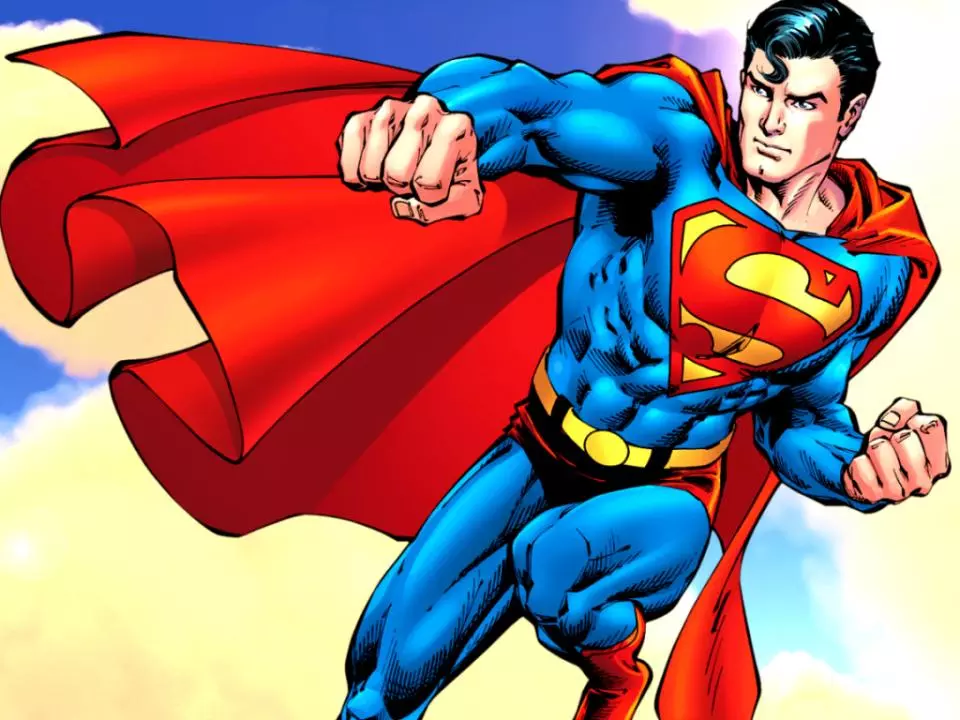

Существование любого культурного явления немыслимо без людей, которые своей энергией, талантом и упорством пробивают ему дорогу в жизнь – и в этом отношении история DC неотделима от развития комиксов как таковых. Более того, в определенный исторический момент это была одна и та же история, точнее, два ее взаимосвязанных проявления в мире издательского бизнеса и в социокультурном измерении. Сложный, увлекательный, порой драматичный не менее самих комиксов, жизненный путь этого издательства – ярчайший пример труда, самоотдачи и успеха.
Культура во многом является порождением общества, социальной среды с ее проблемами и достижениями, а массовое искусство, которое чутко реагирует на желания и потребности широкого круга потребителей – тем более. Поэтому история комиксов DC не может быть полной без понимания того времени, в которое зародилось это издательство.
А время было непростым. В 30-ые годы XX века американское общество (а за ними и многие европейские страны) потряс катастрофический финансовый кризис. Экономика оказалась в глубоком упадке – промышленное производство было отброшено на уровень 30-летней давности, безработица составляла около 20-25%. Многие фермеры, средние, мелкие и индивидуальные предприятия разорились, по стране прокатилась волна самоубийств и народных волнений. Голод, безденежье, отсутствие перспектив стали привычными спутниками людей. Как следствие – рост преступности, теневого рынка, расцвет мафиозных кланов, которые безнаказанно совершали налеты, вымогали деньги, запугивали и устраивали стрельбу. И хотя многих из гангстеров (Джона Диллинджера, Бонни и Клайда, Красавчика Флойда и других) в народе романтизировали, представляли чуть ли не защитниками обездоленных от банкиров и крупного промышленного капитала, все же общество жило в постоянном если не страхе, то справедливом опасении.
Огромное социальное напряжение наиболее пострадавших от Великой депрессии слоев населения требовало выхода. Чтобы оно не вылилось в массовые беспорядки, СМИ и издательские дома публиковали дешевое, развлекательное чтиво, которое хоть как-то отвлекало людей от трудной реальности. В то время в газетах уже свыше 30 лет печатались комиксы, которые в разгар кризиса начали пользоваться возрастающей популярностью. Их потенциал сразу же оценил талантливый и плодотворный писатель бульварных романов Малькольм-Виллер Николсон, бывший офицер кавалерии, который хотел создать собственное творение, резко выделяющееся на фоне безликой массы беллетристики, заполнившей рынки. В 1935 году он основывает National Allied Productions и выпускает на рынок первый свой журнал New Fun: The Big Comic Magazine. Затем последует серия комиксов New Comics#1 и, спустя два года, в 1937 году – Detective Comics. Как следует из названия, основной контент этого журнала представлял собой дешевые детективные истории про частных сыщиков, полицию и гангстеров, «милых» сердцу простого американского обывателя того времени.
Издателем комиксов Николсона было сравнительно небольшое предприятие Гарри Донненфельда и Джека Лейбовица, прославившееся выпускаемыми в первой половине 30-х годов низкопробными бульварными журналами с крайне фривольными (вплоть до откровенной эротики) или кровавыми рассказами. После того, как издательство чуть не прикрыли, а Донненфельда не посадили за распространение порнографии, Гарри и Джон решили переключиться на что-то менее вызывающее, но, тем не менее, пользующееся у публики спросом. Со временем, осознав потенциал комиксов, к 1937 году Донненфельд и Лейбовиц сначала основали с Николсоном совместную компанию Detective Comics Ink., затем выкупили долю Николсона, а его самого вытеснили из бизнеса.
Таким образом, к 1937 году компания National Comics, объединившая National Allied Productions и Detective Comics Ink., превратилась в весьма процветающее, но вполне обычное издательство, выпускающее в мир то, что и так было ему известно. Но в следующем году все изменилось.
Параллельно этим событиям в городе Кливленд двое выходцев из семей еврейских иммигрантов создавали нечто удивительно новое, то, чего еще никогда не встречалось ни в комиксах, ни в популярной культуре вообще.
Джерри Сигел и Джозеф Шустер не пользовались популярностью у сверстников. Первый был типичным гиком, обожающим научную фантастику, второй – бедным художником, который едва мог найти средства на инструменты для рисования. Принадлежность к семьям еврейских иммигрантов также не играла в их пользу – американскому обществу того времени, воспитанному в духе христианского пуританства, был не чужд бытовой антисемитизм.
Объединив свои таланты, оба подростка находили утешение в придумывании различных фантастических историй, притом за концептуальную составляющую отвечал, в основном, Сигел, в то время как прорисовкой персонажей занимался Шустер. В начале 30-х годов Джерри организовал собственный фэнзин Science Fiction, в третьем номере которого они впервые представили миру персонажа под именем Супермен. Однако первый вариант Супермена кардинально отличался от того, который нам известен сейчас. В коротком рассказе «The Reign of the Superman», выпущенном в 1933 году, это был злодей-телепат, совершенно лысый, но могущественный, стремящийся покорить Землю. В дальнейшем этот образ будет использоваться при создании другого персонажа – антагониста Супермена Лекса Лютора.
Через некоторое время Сигел пересматривает концепцию Супермена, а Шустер создает новый образ персонажа, взяв за основу облик известных американских актеров и себя (в роли Кларка Кента). Сегодня историки комиксов, а также культурологи и психологи сходятся на том, что кардинально переменить образ героя Джерри Сигела сподвигло терзавшее его воспоминание об отце, погибшем при грабительском налете на его магазин. Неуязвимый, всемогущий, пуленепробиваемый Супермен был детищем его тоски, ярости и желания наказать зло, которое правило современным ему обществом. Немаловажную роль сыграла и эпоха – несмотря на Великую Депрессию и экономический упадок, Сигел и Шустер росли в эпоху бурного развития науки и технологий, которые вселяли надежду на скорое эволюционное изменение человечества.
Супермен издателями был, мягко говоря, не понят. Это было нечто совершенно революционное, и владельцы книгопечатающих компаний просто не знали, как отреагирует общество на такого фантастического персонажа. Конечно, до этого во множестве печатались научно-фантастические комиксы, но их герои и злодеи были вполне себе понятными, привычными, знакомыми. Здесь же – нечто совершенно аномальное, потрясающее воображение. Лишь одно издательство согласилось опубликовать 40-страничный черно-белый комикс, но после того не возвращалось к этой теме, и Супермен оказался забыт на 4 года.
Шустер и Сигел рассылали и рассылали свой комикс по всем издательствам, многим из них – по нескольку раз, пока однажды, в 1938 году, редактору National Comics Винсу Салливану художник Шелдон Мейер не принес вытащенное из почтовой корзины письмо. 18 апреля 1938 года комикс о Супермене был опубликован в Action Comics#1. Так, с концептуальной революции, начался Золотой Век и настоящая история DC Comics.
Сказать, что Супермен «взорвал» издательский бизнес – значит не сказать ничего. Люди, уставшие от преступности, коррупции, жестокости капитала, увидели в супергерое защитника, который не предается пространным рассуждениям о добре и зле, а закатывает рукава и, в общем-то, вершит самосуд. Для детей и подростков, особенно таких, какими были Сигел и Шустер, Супермен стал примером для подражания, идеалом. Популярность героя оказалась такой огромной, что в 1939 году руководители National Comics пошли на беспрецедентный шаг и основали серию, посвященную исключительно ему. Трудиться над ней продолжили создатели Супермена – Джерри Сигел и Джозеф Шустер, к которым присоединилась целая команда помощников.
В США и Канаде начала формироваться первая субкультура, основанная на комиксах. Десятки тысяч детей и подростков вступали в клуб «Супермены Америки», впервые в истории появился тематический мерч – костюмы, футболки с логотипом и расцветкой одеяния супергероя, короткие мультфильмы, пазлы и другая атрибутика. Сами комиксы расходились многомиллионными тиражами, магазинам зачастую не хватало экземпляров, чтобы удовлетворить спрос. Все это приносило огромный доход, и National Comics стала главным издательством комиксов в США.
Однако руководство компании понимало, что одного супергероя недостаточно для долговременного процветания издания. Поэтому в 1939 году редакция National Comics обратилось к художникам и писателям с предложением создать еще одного супермена. На него откликнулся творческий дуэт иллюстратора Роберта Кейна и писателя Уильяма Фингера, через три дня представивший редактору Винсу Салливану нового супергероя – Бэтмена.
Появившийся впервые в выпуске Detective Comics#27, Бэтмен был связующим звеном между новой супергеройской тематикой и традиционным жанром городских историй про гангстеров и детективов. Популярность персонажа быстро росла, что было связано как с его загадочностью, так и с тем, что он, в конечном счете, был обычным (хоть и богатым) человеком. Это было близко читателям, так было легче вообразить себя супергероем, не имея героических сверхспособностей – достаточно иметь ум. Сближало читателей с Бэтменом и еще одно обстоятельство, отраженное в Detective Comics#33 – смерть родителей маленького Брюса Уэйна от рук гангстеров. В эпоху Великой Депрессии и мафиозных разборок кто не увидит в этом герое себя?
Создание этих трех каноничных персонажей вселенной DC Comics как нельзя кстати подоспело к нападению Японии на Перл-Харбор и вступлению США во Вторую мировую войну. Теперь Супермен, Бэтмен, Чудо-Женщина и многие другие появившиеся к тому времени супергерои переключились с придуманных злодеев на страшное зло, которое имело вполне реальное воплощение в лице Гитлера, Муссолини и императора Хирохито, развязавших беспрецедентную по жестокости мировую бойню. Огромными партиями (30 % от всего печатного материала, поступающего в армию) комиксы отправлялись на фронт и в тыл, где поднимали боевой дух солдат и рабочих оборонных предприятий. Вслед за придуманными героями бороться с нацизмом и японской экспансией отправились и многие из их создателей, в их числе был автор Супермена Джерри Сигел, Уилл Эйснер, издатель Ирвин Донненфельд, иллюстратор Берт Кристман, некоторые из которых так и не вернулись с полей сражений.